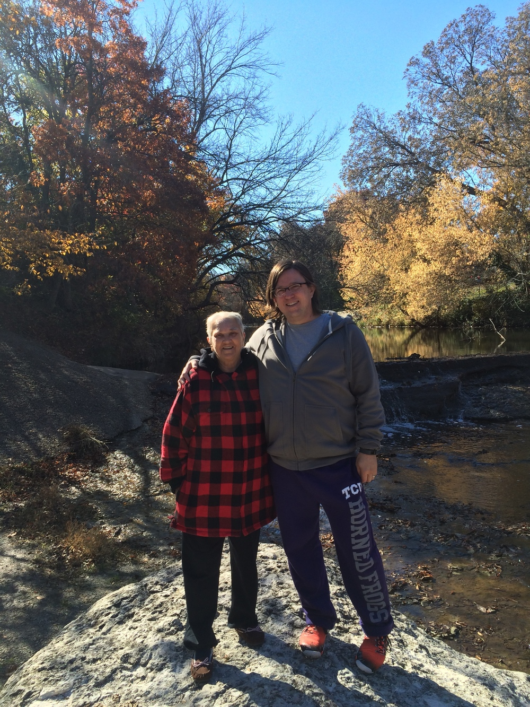
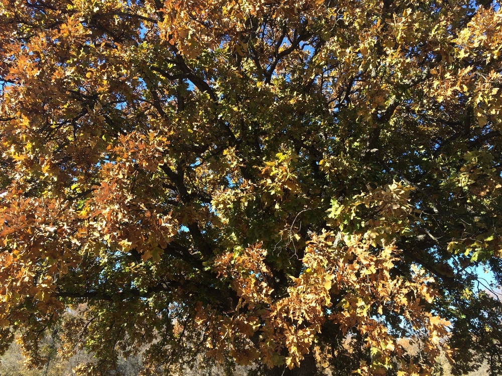
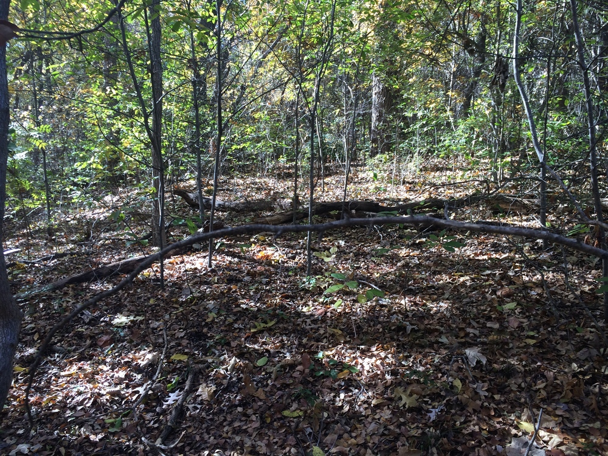
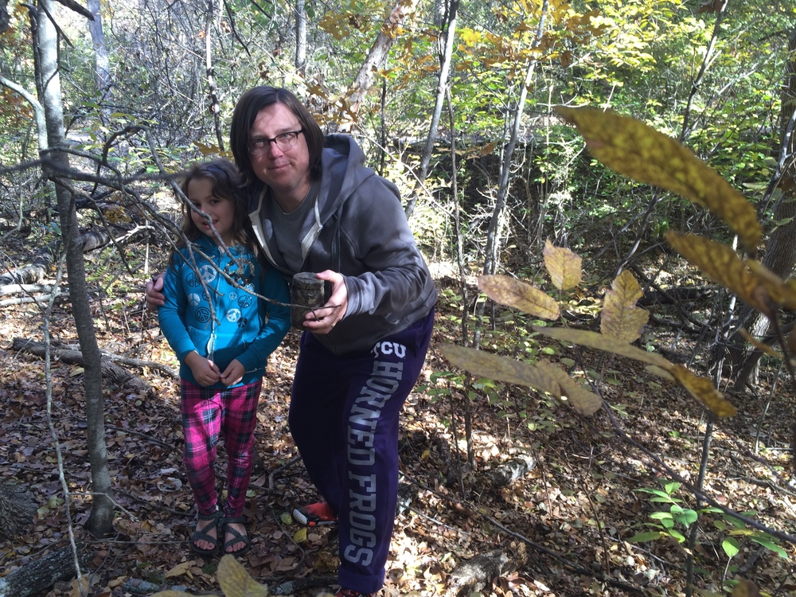
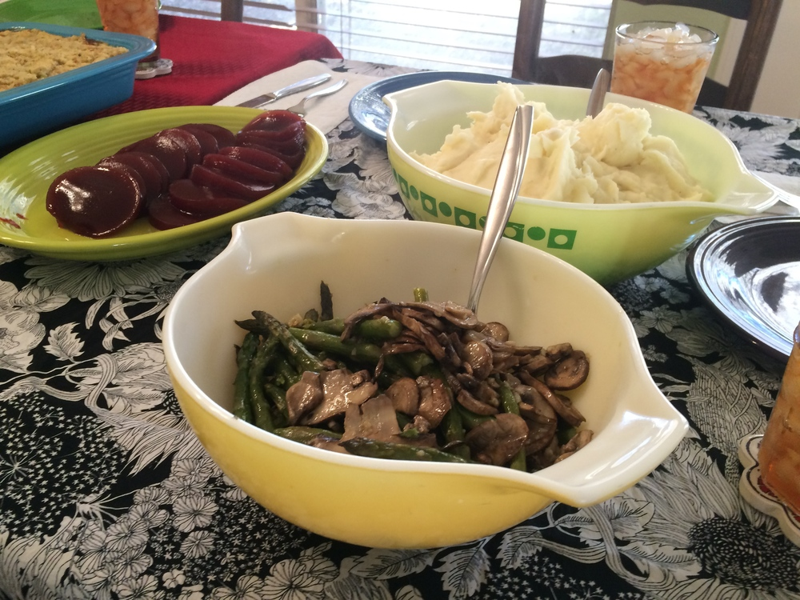
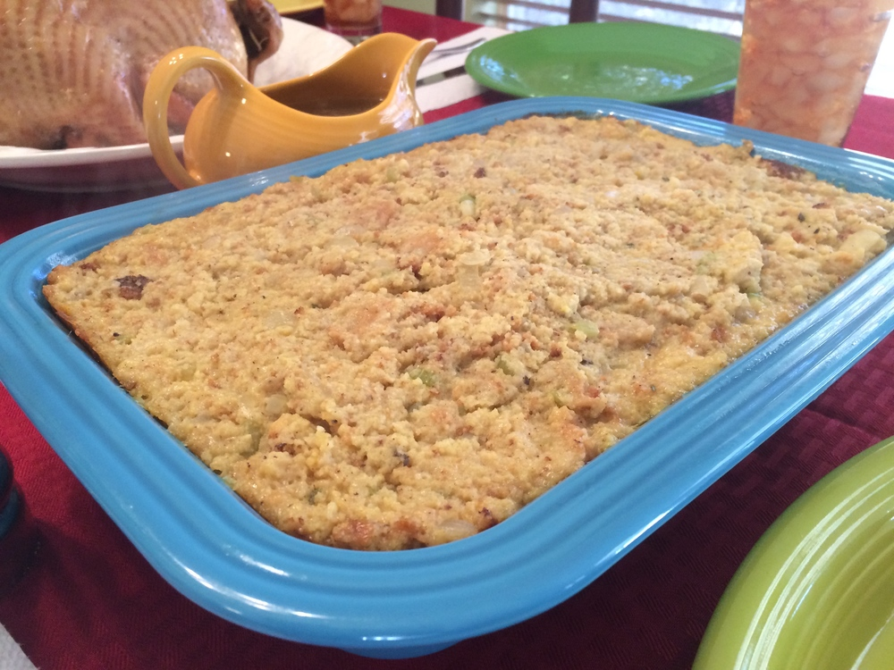
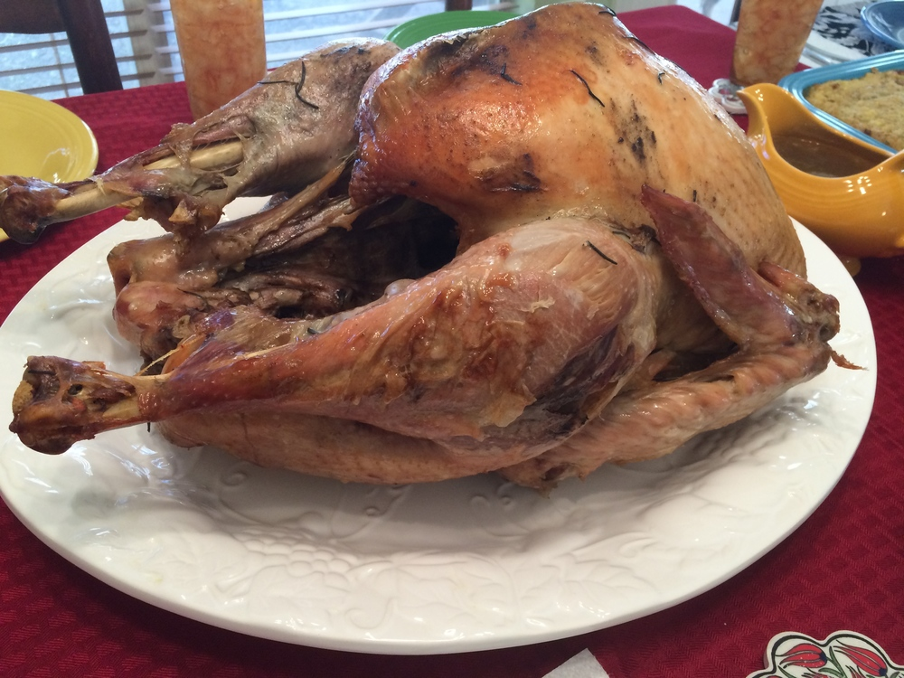
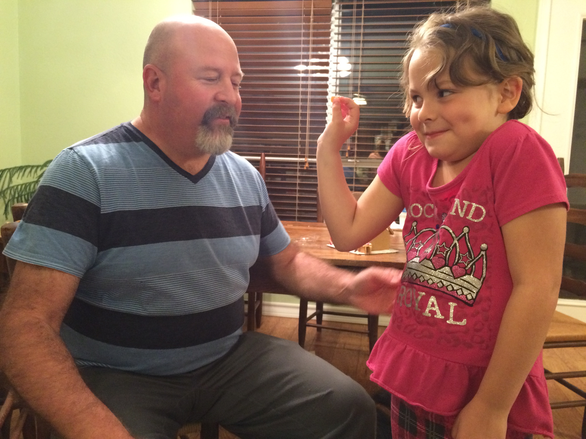
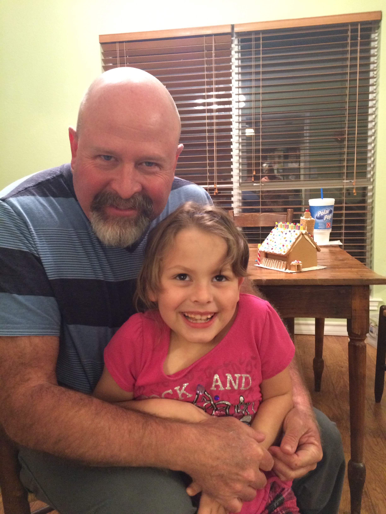

This Thanksgiving holiday was another one for the books. I hope the holiday treated you and yours equally as well.
My parents, niece, and grandma came to our place. This morning, we went for a nice walk in the park. My mom and niece stopped at a playground and my grandma and I walked to the spillway of the river. We met a nice guy who offered to take our picture. On the way back, I stopped for a geocache and explained the basics of the game to my niece.




After our walk, we headed home for Thanksgiving dinner. Ann Margaret outdid herself yet again this year. Beyond the turkey and other fixings you see here, she made three pies—sweet potato pecan, pumpkin, and cherry. My grandma brought a pecan pie and my brother-in-law brought a cranberry salad. We ate more than any human ever should.



My brother-in-law was a champ and kept my niece occupied most of the day.


Thanksgiving day isn't complete until we build something out of gingerbread. This year, we took a shortcut and bought a kit with the house already assembled. The result is still pretty good though. The kit did not include a walkway (We made that out of a Hershey's cookies & creme that was left over from Halloween.) or a chimney or dog house (We built them out of graham crackers.). This is the fourth year we've done some sort of gingerbread structure (usually a house but last year we made a tree and the year before that we made a small village) and it's become something my niece really looks forward to during the holidays.